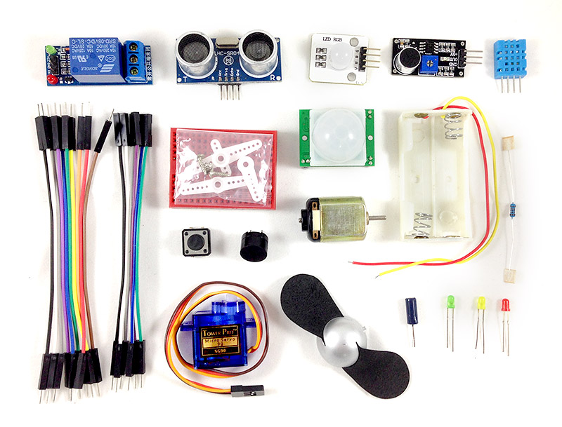

Webduino Package A + B ( 電子材料包 )
Webduino Package A + B 是一份相當完整的零件包，從入門的零組件到進階傳感器都有包含，除了可以控制 LED 燈、三色 LED 燈、蜂鳴器或伺服馬達，更可以利用超音波傳感器、人體紅外線偵測傳感器、聲音偵測傳感器和溫濕度傳感器偵測環境數據，搭配串接後段資料庫的服務，做出千變萬化的創意應用。
售價：
新台幣 1,050 元整 ( 已含稅 )
點選「立刻購買」，將會前往 Webduino 露天賣場，貨運可以選擇「超商貨到付款」、「郵局包裹」、「7-11 取貨」模式，購買前請先 閱讀購買須知以及退換貨說明，歡迎政府機關、教育單位或公司行號採購，採購相關資訊請 來信 或來電 07-3388511 洽詢。
產品內容：
- 1. 人體紅外線傳感器 ×1
- 2. 溫濕度傳感器 ×1
- 3. 聲音偵測傳感器 ×1
- 4. 蜂鳴器 ×1
- 5. 繼電器 ×1
- 6. 風扇馬達組 ×1
- 7. 震動開關 ×1
- 8. 超音波傳感器 ×1
- 9. 伺服馬達 ×1
- 10.伺服馬達齒輪組 ×1
- 11.三色 LED 燈 ×1
- 12.LED 燈 ×3
- 13.按鈕開關 ×1
- 14.1k 電阻 ×1
- 15.小型麵包板 ×1
- 16.杜邦線 ( 公公 ) ×10
- 17.杜邦線 ( 公母 ) ×6
- 18.零件收納盒 ×1
產品照片：
